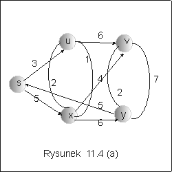
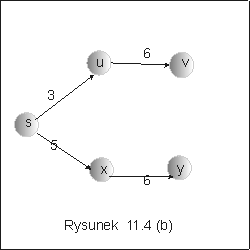
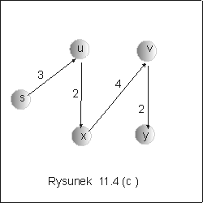

| « poprzedni punkt | nastêpny punkt » |
Dany jest graf zorientowany G = <V, E> i funkcja przypisuj±ca krawêdziom grafu liczby rzeczywiste, c: E ® R+. Funkcjê c nazywamy funkcj± kosztu. Problem, którym bêdziemy siê zajmowaæ w tej czê¶ci wyk³adu polega na znalezieniu najkrótszych dróg miêdzy wierzcho³kami tego grafu.
Definicja 4.1 Niech p oznacza dowoln± drogê (¶cie¿kê) od u do v w grafie G = <V, E>, p = (v0,v1,..., vk) oraz u = v0, v = vk. Koszt drogi p, d(p), definiujemy jako sumê kosztów krawêdzi, le¿±cych na tej drodze,
d(p) = Si=0,..., k-1 c(vi,vi+1).
D³ugo¶æ najkrótszej ¶cie¿ki od u do v oznaczamy przez d(u,v), d(u,v) = minpd(p), gdzie minimum rozci±ga siê na wszystkie drogi p prowadz±ce od u do v.
Zauwa¿my najpierw, ¿e najkrótsza ¶cie¿ka, o ile istnieje, musi byæ drog± prost±, tzn. tak±, ¿e wszystkie wierzcho³ki tej drogi s± ró¿ne. Jest oczywiste, ¿e gdyby na pewnej drodze znajdowa³ siê cykl, to usuniêcie go zmniejszy³oby koszt drogi. Z drugiej strony, je¶li mamy najkrótsz± ¶cie¿kê od u do v, to tym samym mamy najkrótsze ¶cie¿ki miêdzy dowolnymi dwoma wierzcho³kami tej ¶cie¿ki. Inaczej mówi±c, pod¶cie¿ki najkrótszych ¶cie¿ek s± same najkrótszymi ¶cie¿kami.
Z twierdzenia 4.1 wynika natychmiast, ¿e dla dowolnej pary wierzcho³ków u, v, je¶li istnieje ¶cie¿ka od u do v,oraz v' jest wierzcho³kiem poprzedzaj±cym v na tej ¶cie¿ce, to
d(u,v) = d(u,v') + c(v,v').
Problem najkrótszych ¶cie¿ek mo¿na rozwa¿aæ w trzech wariantach:
I. Dla danego grafu zorientowanego znale¼æ najkrótsz± ¶cie¿kê miêdzy dwoma
danymi wierzcho³kami.
II. Znale¼æ najkrótsze ¶cie¿ki od wyró¿nionego wierzcho³ka, zwanego ¼ród³em,
do wszystkich innych wierzcho³ków grafu.
III. Znale¼æ najkrótsze ¶cie¿ki miêdzy dowolnymi wierzcho³kami grafu.
Chocia¿ problem pierwszy, wydaje siê byæ naj³atwiejszy, to nie jest znane ¿adne jego rozwi±zanie asymptotycznie lepsze ni¿ rozwi±zanie polegaj±ce na znalezieniu najkrótszych dróg z ustalonego wierzcho³ka do wszystkich innych (problem II) i wybranie interesuj±cej nas konkretnej ¶cie¿ki. Problem trzeci równie¿ mo¿na rozwi±zaæ wykorzystuj±c rozwi±zanie problemu II. Zajmiemy siê wiêc bardziej szczegó³owo problemem II.
Zauwa¿my, ¿e w szczególnym przypadku, gdy koszty wszystkich krawêdzi s± takie same mamy d(u,v) = c(u,v) * d³, gdzie d³ jest d³ugo¶ci± minimalnej ¶cie¿ki od u do v. W tym przypadku problem najkrótszych ¶cie¿ek mo¿na rozwi±zaæ stosuj±c algorytm BFS przegl±dania grafu "wszerz".
Za³ó¿my, ¿e dany jest graf spójny, którego ka¿dy wierzcho³ek ma dwa dodatkowe atrybuty m,d. Atrybut m s³u¿y do markowanie wierzcho³ków, a atrybut d, bêdzie s³u¿y³ do przechowywania odleg³o¶ci od ¼ród³a. Przyjmijmy, ¿e graf jest dany w postaci tablicy list s±siedztwa (incydencji). Algorytm wykorzystuje kolejkê FIFO, pocz±tkowo zawieraj±c± tylko wierzcho³ek- ¼ród³o, zamrkowany jako odwiedzony i z atrybutem d=0. Przegl±danie "wszerz" realizuje siê, podobnie jak w przypadku drzew:
| Dopóki kolejka nie jest pusta wykonuj: | |
| 1. wyjmij z kolejki pierwszy wierzcho³ek v i wstaw do niej wszystkie wierzcho³ki z jego listy s±siedztwa, o ile nie by³y jeszcze zamarkowane, | |
| 2.dla ka¿dego dopisanego do kolejki wierzcho³ka u, przyjmij u.d := v.d + 1; | |
| 3.zamarkuj wierzcho³ki wstawione w tym kroku do kolejki. | |
Na zakoñczenie tego punktu zauwa¿my jeszcze, ¿e graf utworzony przez najkrótsze ¶cie¿ki ze ¼ród³a s, tworzy drzewo o korzeniu w s. Drzewo to nie musi byæ jedyne.
Przyk³ad 4.1
Na rysunku 11.4 przedstawiono graf i dwa ró¿ne drzewa najkrótszych ¶cie¿ek ze ¼ród³a s. Ze ¼ród³a do wierzcho³ka v prowadz¹ ró¿ne najkrótsze ¶cie¿ki: s-u-v w pierwszym drzewie, lub s-u-x-v w drugim.
|  |  |  |
Pytanie 5:: Jaki jest koszt algorytmu przegl±dania grafu o m krawêdziach i n wierzcho³kach metod± BFS ?
| « poprzedni punkt | nastêpny punkt » |